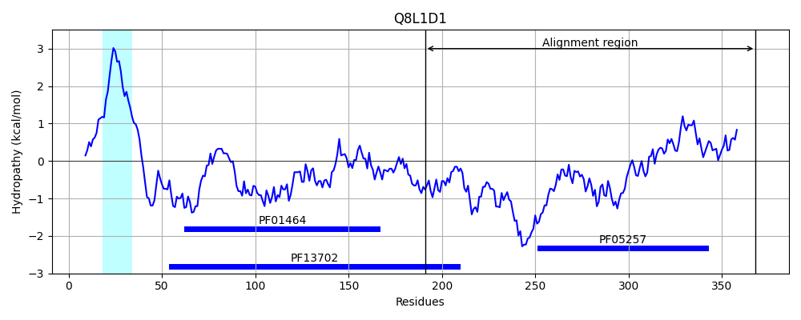
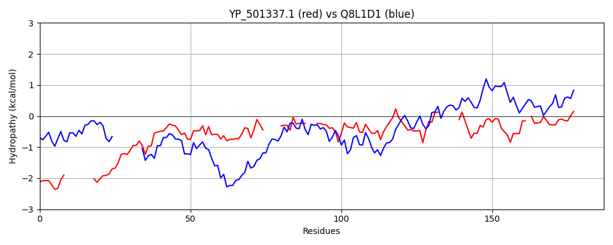

Hit Accession: Q8L1D1
Hit TCID: 3.A.7.14.1
Hit Description: gnl|BL_ORD_ID|16488 gnl|TC-DB|Q8L1D1|3.A.7.14.1 Putative uncharacterized protein - Enterococcus faecalis (Streptococcus faecalis).
Mach Len: 187
e:0.000000
Query TMS Count : 1
Hit TMS Count: 1
TMS-Overlap Score: 0.000000
Predicted Substrates:CHEBI:4291;deoxyribonucleic acid
BLAST Alignment:
Score: 202 , Bit scores: 82 bits, E-value: 3.2e-18, Alignment length: 187, Percentage identity: 31
Query: 92 YNHSYQYNN---------YTNNSQTATNNYYTGGSGASYSTTSNNVHVTTTAAPSSNGRSISNGYASGSNLYTSG-----QCTYYVFDR---VGGKIGSTWGNASNWANAAASSGYTVNNTPKVGAIMQTTQG------YYGHVAYVEGVNSNGSVRVSEMN-YGHGAGVVTSRTISANQAGSYNFI 254
YN+ Y Y N Y N SQ S SNN PS + G N TSG QCT+Y F+R +G + GN W + GY V N PKVG + G YGHVA+VE VN++G++ VSE N G+G ++ R + A+ A +++
Sbjct: 191 YNYRYNYGNMFYVPKLLEYVNESQA---------SAEGVQNNSNNTGAVQVDVPSEYKNKLRYPRYDGHNYNTSGSYPFGQCTWYAFNRMAQIGKPVDDFMGNGGEWGYKGKALGYKVTNKPKVGTAISFPPGSFGSDPVYGHVAFVEVVNADGTLLVSECNVVNPGSGTISYRVVPASIANIASYV 368 | Protein Hydropathy Plots: |
|---|
 |  |
Pairwise Alignment-Hydropathy Plot:
|
|---|
|  |